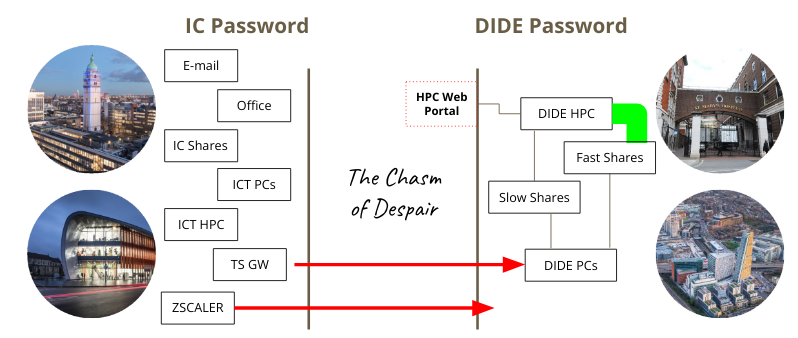

This vignette primarily exists so that we can point to it from other bits of documentation, or requests for help, with details about doing particular chores with hipercow.
Options
There are a few influential options that control hipercow’s behaviour, and you may want to set these if you wish to depart from the defaults that we have set.
Influential options
hipercow.auto_install_missing_packages
Logical, controlling if hipercow should install missing
packages as it needs them on your machine. The default is
TRUE, which will generally cause
hipercow.windows and conan2 to be installed
the first time you try and use hipercow.
hipercow.progress
Logical, controlling if we should display a progress bar in some
contexts (e.g., task_wait). This affects the default
behaviour of any hipercow function accepting a progress
argument, with this option becoming the default value in the absence of
an explicit argument. That is, you can always disable individual
progress bars but this option lets you disable them by default. The
default value of this option is TRUE (i.e., display
progress bars by default).
hipercow.validate_globals
Logical, controlling if we validate the value of “global” variables
when a task starts. If TRUE, then when we save a task
(e.g., with task_create_expr()) and where you have
created an environment with hipercow_environment_create()
and specified values for the globals argument,
then we hash the values that we find in your current session and when
the task starts on the cluster we validate that the values that we find
are the same as in your local session. The default is FALSE
(i.e., this validation is not done).
hipercow.max_size_local
A number, being the maximum size object (in bytes) that we will save
when creating a task (e.g., with task_create_expr()). When
we save a task we need to save all local variables that you reference in
the call; often these are small and it’s no problem. However, if you
pass in a 5GB shapefile then you will end up filling up the disk with
copies of this file, and your task will spend a lot of time reading and
writing them. It’s usually better to arrange for large objects to be
found from your scripts via your environment. The default value is
1e6 (1,000,000 bytes, or 1 MB). Set to Inf to
disable this check.
Options from other packages
We make heavy use of the cli package, see its documentation on
options. Particular options that you might care about:
cli.progress_show_after: Delay in seconds before showing the progress bar; you might reduce this to make bars appear more quickly.cli.progress_clear: Retain the progress bar on screen after completion.
Setting options
You can set options either within a session by using the
options() function or for all future sessions by editing
your .Rprofile.
Changing an option with options() looks like:
options(hipercow.max_size_local = 1e7)You might put this at the top of your cluster script and it will affect any future tasks that you submit within that session after you run it. You’ll probably run this line next time, so it would have an effect there too. It won’t affect any other project.
If you always want that value, you can add it to your
.Rprofile. The easiest way of doing this is by using the
usethis package and running:
usethis::edit_r_profile()and then adding a call to options() anywhere in that
file. If you are comfortable with using (and exiting) vi on
the command line you may prefer using vi ~/.Rprofile.
After changing your .Rprofile you will need to restart R
for the changes to take effect.
You can set multiple options at once if you want by running (for example):
options(
hipercow.progress = FALSE,
hipercow.max_size_local = 1e-7)R versions
By default, we try and track a “suitable” copy of R based on your current version. We will try and use exactly the same version if available, otherwise the oldest cluster version that is newer than yours, or failing that the most recent cluster version.
You can control the R version used when configuring; for example to
use 4.3.0 exactly you can use:
hipercow_configure("windows", r_version = "4.3.0")Not all versions are installed; at the moment we have
4.0.5, 4.1.3, 4.2.3 and
4.3.0 installed but will add more.
Try not to use versions that are more than one “minor” version old
(the middle version number). You can see the current version on CRAN’s landing page. If it is
4.3.x then versions in the 4.2.x and
4.3.x series will likely work well for you, but
4.1.x and earlier will not work well because binary
versions of packages are no longer available and because some packages
will start depending on features present in newer versions, so may not
be available.
Paths and shares
For anything to work with hipercow on the windows
cluster, your working directory must be on a network share. If you are
not sure if you are on a network share, then run
getwd()Interpreting this depends on your platform:
-
Windows: A drive like
C:orD:will be local. You should recognise the drive letter as one likeQ:that was mapped by default as your home orM:that you mapped yourself as a project share. -
macOS: The path will likely be below
/Volumes(but not one that corresponds to a USB stick of course!) -
Linux: The path should start at one of the mount
points you have configured in
/etc/fstabas a network path.
Project shares and home directories
We strongly recommend using a project share for your
cluster work. Don’t use your home directory (generally Q:
on windows) for anything more intensive than casual experimentation.
This is because the project shares are connected to the cluster over a
much faster network, and tend to be much larger. We have seen many
people with jobs that fail mysteriously on their network home directory
when launched in parallel, and this is generally fixed by using a
project share.
If you don’t know if you have a project share, talk to your PI about if one exists. If you are a PI, talk to Chris (and/or Wes) about getting one set up.
Mapping network drives
For all operating systems, if you are on the wireless network you will need to connect to the department network using ZScaler; see the ICT documentation for details. If you can get on a wired network you’ll likely have a better time because the VPN and wireless network seems less stable in general (it is not clear how this will be in the new building at White City, or indeed how many wired points there will be).
Windows
If you are using a windows machine in the DIDE domain, then your
network drives are likely already mapped for you. In fact you should not
even need to map drives as fully qualified network names
(e.g. //fi--didef3/tmp) should work for you.
macOS
In Finder, go to Go -> Connect to Server... or press
Command-K. In the address field write the name of the share
you want to connect to. Useful ones are
-
smb://fi--san03.dide.ic.ac.uk/homes/<username>– your home share -
smb://fi--didef3.dide.ic.ac.uk/tmp– the temporary share
At some point in the process you should get prompted for your username and password, but I can’t remember what that looks like.
These directories will be mounted at
/Volumes/<username> and /Volumes/tmp (so
the last bit of the filename will be used as the mountpoint within
Volumes). There may be a better way of doing this, and the
connection will not be reestablished automatically so if anyone has a
better way let me know.
Linux
This is what Rich has done on his computer and it seems to work, though it’s not incredibly fast. Full instructions are on the Ubuntu community wiki.
First, install cifs-utils
sudo apt-get install cifs-utilsIn your /etc/fstab file, add
//fi--san03.dide.ic.ac.uk/homes/<dide-username> <home-mount-point> cifs uid=<local-userid>,gid=<local-groupid>,credentials=/home/<local-username>/.smbcredentials,domain=DIDE,sec=ntlmssp,iocharset=utf8 0 0where:
-
<dide-username>is your DIDE username without theDIDE\bit. -
<local-username>is your local username (i.e.,echo $USER). -
<local-userid>is your local numeric user id (i.e.id -u $USER) -
<local-groupid>is your local numeric group id (i.e.id -g $USER) -
<home-mount-point>is where you want your DIDE home directory mounted -
<tmp-mount-point>is where you want the DIDE temporary directory mounted
please back this file up before editing.
So for example, I have:
//fi--san03.dide.ic.ac.uk/homes/rfitzjoh /home/rich/net/home cifs uid=1000,gid=1000,credentials=/home/rich/.smbcredentials,domain=DIDE,sec=ntlmssp,iocharset=utf8 0 0The file .smbcredentials contains
username=<dide-username>
password=<dide-password>and set this to be chmod 600 for a modicum of security, but be aware your password is stored in plaintext.
This set up is clearly insecure. I believe if you omit the credentials line you can have the system prompt you for a password interactively, but I’m not sure how that works with automatic mounting.
Finally, run
sudo mount -ato mount all drives and with any luck it will all work and you don’t have to do this until you get a new computer.
If you are on a laptop that will not regularly be connected to the
internal network, you might want to add the option noauto
to the above
//fi--san03.dide.ic.ac.uk/homes/rfitzjoh /home/rich/net/home cifs uid=1000,gid=1000,credentials=/home/rich/.smbcredentials,domain=DIDE,sec=ntlmssp,iocharset=utf8,noauto 0 0and then explicitly mount the drive as required with
sudo mount ~/net/homeUsernames and passwords
For historical reasons DIDE exists on its own domain (DIDE) separate from Imperial’s domain (IC). This means that you may have a different DIDE username to your imperial username (though usually the same) and you may have a different password (though most people set these to be the same).
The overall situation is summarised in this infographic:

If you need to change your DIDE password you can do this from any DIDE domain machine by pressing Ctrl-Alt-Delete and following the prompts. If it has already expired, such that you can’t login, you need to contact Chris or Paul.
We store credentials using the keyring package. This saves your
username and password securely in your system keyring, which will be
unlocked on login for at least Windows and macOS. You will need to rerun
windows_authenticate() whenever you change your DIDE
password.
Linux users may have to install some additional system packages (on
Ubuntu/Debian etc this is libsecret-1-dev,
libssl-dev, and libsodium-dev) or you will
have to enter your keychain password each time you use hipercow.
Workflow considerations
Long running tasks
The R session that you use to send tasks to the cluster is not important; only the directory from which you send the tasks. So you can stop the R session, reboot your computer or shut down your laptop and your tasks will keep running (or keep waiting for the cluster to pick them up). If you come back to the same working directory later you can ask about a task’s status, fetch its results etc easily.
Disk space
If you run out of disk space, terrible things will happen, and the error messages that you get may be misleading. Worse, you may run out of space, then have some space gets freed up so that it’s not obvious what the original problem was.
The underlying reason for this is that we store information about the
state of tasks on your network share; if you run out of space while
writing the final result of a task, then that task will remain as
running indefinitely because we fail to write out that it
succeeded.